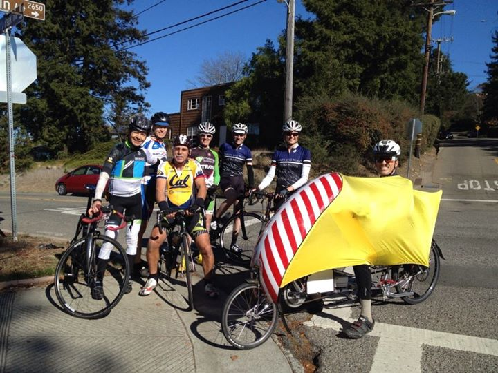

|
 |
 |
|
|
|
|  |
| The top of Marin Ave, at Grizzly Peak (Paul Chuck) |
A dedicated group of climbers, many led by the intrepid tandem team of Paul and Paul, continued on from the Low-Key post-ride festivities at the top of Lomas Cantadas to tackleone of the most challenging urban miles in the US: Marin Ave in Berkeley. As of this writing, 13 Low-Keyers have uploaded their data to the Low-Key site, and and at least two others completed the route. Every one of these riders wins the 7X challenge. The experience of cresting Euclid on Marin Ave to see the final, three steepest blocks of the eleven-block climb is truly memorable, far more memorable than the result of any computer calculations.
That said, it was Janet Gardner and David Collet coming out at the head of the standings in the men's and women's solo divisions for the challenge, Janet brilliantly powering her way up the final block to Grizzly Peak, David riding earlier. Meanwhile Paul and Paul, riding the intimidating grades of Marin Ave on their tandem, amazed all present with their accomplishment, winning the tandem division and leading Sisters and Misters of No Mercy to the team win.
But really, to have ridden Marin less quickly just means to have suffered it longer. The goal was in the doing, and to that end, everyone here succeeded.
As the tandem group was mercifully finishing it's assault on Marin Ave, Bill Bushnell arrived in his hybrid-electric recumbent. Proving the large machine has no problems with extreme grades, Bill produced an impressive 4:25 time to cement the lead in the hybrid-electric division.
Please check out the split scores for this week's climb, including block-by-block times up Marin, as well as splits on Lomas Cantadas earlier.
KOM special mention qualifiers indicated with orange background. Discarded scores are crossed out. Volunteer weeks are indicated with V. Ride credit weeks are indicated with RC. V and RC weeks are equivalent for scoring.
| pl | # | name | team | cat | time | mph | fph | score |
|---|---|---|---|---|---|---|---|---|
| 1 | 209 | Janet Gardner | Sr's & Mr's of No Mercy | 45+ | 31:41.47 | 6.29 | 3495 | 108.08 |
reference time for division Women = 35:12.04
| pl | # | name | team | cat | time | mph | fph | score |
|---|---|---|---|---|---|---|---|---|
| 1 | 49 | David Collet | Pen Velo/Pomodoro | 40+ | 22:02.96 | 9.03 | 5023 | 123.05 |
| 2 | 409 | Bill Laddish | Team CVC | 40+ | 22:42.43 | 8.77 | 4878 | 120.40 |
| 3 | 108 | Todd Markelz | 35+ | 24:22.70 | 8.17 | 4543 | 114.24 | |
| 4 | 1 | Daniel Connelly | Low-Key | 45+ | 24:42.23 | 8.06 | 4484 | 113.12 |
| 5 | 605 | Steve Fielding | 45+ | 24:57.16 | 7.98 | 4439 | 112.28 | |
| 6 | 710 | Jameison Martin | 30:25.22 | 6.55 | 3641 | 96.97 | ||
| 7 | 326 | Jeff Shute | 35+ | 30:42.49 | 6.49 | 3607 | 96.30 | |
| 8 | 405 | Bruce Gardner | Sr's & Mr's of No Mercy | 40+ | 38:32.57 | 5.17 | 2874 | 81.39 |
| 9 | 71 | Stephen Fong | CyclePath Racing | 0 | 38:38.32 | 5.16 | 2867 | 81.24 |
reference time for division Men = 29:10.88
| pl | # | name | team | cat | time | mph | fph | score |
|---|---|---|---|---|---|---|---|---|
| 1 | 410 | Paul McKenzie | Sr's & Mr's of No Mercy | 55+ | 28:16.44 | 7.05 | 3917 | 102.37 |
| 46 | Paul Chuck | Sr's & Mr's of No Mercy | 55+ |
| pl | # | name | team | cat | time | mph | fph | score |
|---|---|---|---|---|---|---|---|---|
| 1 | 6 | Bill Bushnell | Low-Key | Hors | 14:39.00 | 13.60 | 7560 | 111.43 |
reference time for division Hybrid Electric = 16:57.36
| pl | team | score | riders |
|---|---|---|---|
| 1 | Sr's & Mr's of No Mercy | 312.81 | Janet Gardner, Bruce Gardner, Paul McKenzie, Paul Chuck |
| 2 | Low-Key | 224.55 | Daniel Connelly, Bill Bushnell |
| 3 | 210.53 | Jeff Shute, Todd Markelz | |
| 4 | Pen Velo/Pomodoro | 123.05 | David Collet |
| 5 | Team CVC | 120.40 | Bill Laddish |
| 6 | CyclePath Racing | 81.24 | Stephen Fong |